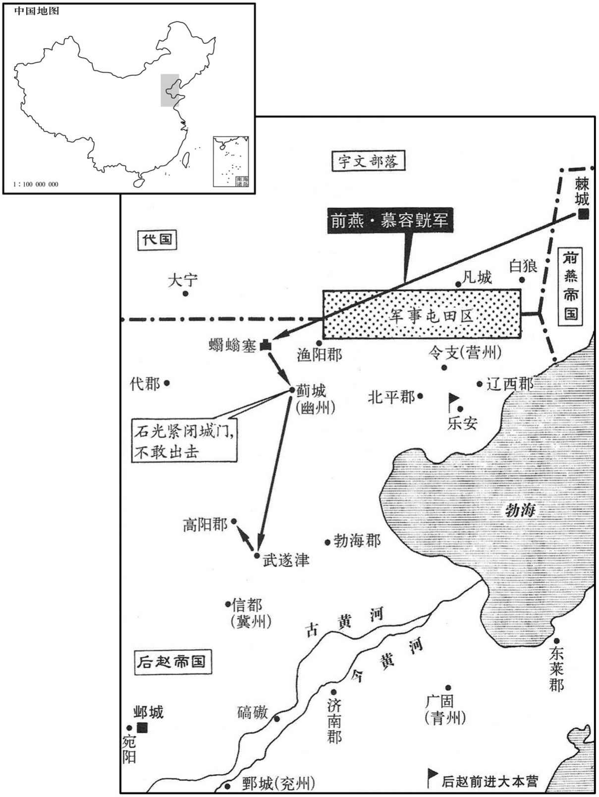

公元340年资治通鉴：本年记事、原文与白话对照
按原书编年位置阅读；追叙和史论不等于本年发生的事件。白话采用所据译本，缺译不以生成译文补齐。
卷96 · 本年记事
公元340年 · 晋显宗成皇帝咸康六年
六年〔（庾子、三四○）〕
上传原文的注释括号有异常，字符原样保留；无法可靠划分的段落默认全文显示。
本年事件索引（现代整理）
春，正月，庚子朔，都亭文康侯庾亮薨。以护军将军、录尚书何充为中书令。〔录尚书，即录尚书事。〕庚戌，以南郡太守庾翼为都督江．荆．司．雍．梁．益六州诸军事、安西将军、荆州刺史、假节，代亮武昌。〔雍，于用翻。〕时人疑翼年少，不能继其兄。〔少，诗照翻。〕翼悉心为治，戎政严明，数年之间，公私充实，人皆称其才。〔治，直吏翻。〕
春季，正月，庚子朔（初一），都亭文康侯庾亮去世。成帝任用护军将军、录尚书何充为中书令。庾戌（十一日），任命南郡太守庾翼为都督江州、荆州、司州、雍州、梁州、益州诸军事及安西将军荆州刺史、假节，代替庾亮镇守武昌。当时人怀疑庾翼年轻，不能继承他兄长庾亮的业绩。庾翼尽心治理，军务和政务都很严明，数年之间，官府和私人资用充实，众人都称赞他的才能。
辛亥，以左光禄大夫陆玩为侍中、司空。
辛亥（十二日），东晋朝廷任用左光禄大夫陆玩为侍中、司空。
宇文逸豆归忌慕容翰才名；翰乃阳狂酣饮，或卧自便利，〔便，毘连翻，溲也。利，下泄也。〕或被发歌呼，拜跪乞食。〔被，皮义翻。〕宇文举国贱之，不复省录，〔省，察也，视也。录，采也，收也，记也。省，悉景翻。〕以故得行来自遂，山川形便，皆默记之。〔行来，犹言往来也。〕燕王皝以翰初非叛乱，以猜嫌出奔，〔事见上卷咸和八年。〕虽在他国，常潜为燕计；〔如牛尾谷之战是也。〕乃遣商人王车通市于宇文部以窥翰。翰见车，无言，抚膺颔之而已。〔抚，击也。膺，胸也。〕皝曰：「翰欲来也。」复使车迎之。〔复，扶又翻；下同。〕翰弯弓三石余，矢尤长大，皝为之造可手弓矢，〔可手，便手也；言惟翰手可用耳。为，于伪翻。〕使车埋于道旁而密告之。二月，翰窃逸豆归名马，携其二子过取弓矢，逃归。逸豆归使骁骑百余追之。〔骁，坚尧翻。骑，奇寄翻。〕翰曰：「吾久客思归，既得上马，无复还理。吾向日阳愚以诳汝，〔上，时掌翻。诳，居况翻。〕吾之故艺犹在，无为相逼，自取死也！」追骑轻之，直突而前。翰曰：「吾居汝国久悢悢，〔【章：十二行本作「恨恨」；乙十一行本同；孔本同；熊校同。】〕〔李陵赠苏武诗：悢悢不能辞。吕向注曰：悢悢，相恋之情。〕不欲杀汝；汝去我百步立汝刀，吾射之，不一发中者汝可还，不中者可来前。」追骑解刀立之，一发，正中其环；〔孔颖达曰：礼，进剑者左首。首，剑拊镮也。少仪曰：泽剑首。郑云：泽，弄也。推寻剑刃利，不容可弄，正是剑镮也。又云：刀却刃授颖。郑云：颖，镮也。镮，与环同。射，而亦翻。中，竹仲翻。〕追骑散走。皝闻翰至，大喜，恩遇甚厚。
宇文逸豆归妒忌慕容翰的才能、名望，慕容翰便佯装癫狂，终日酣饮，有时躺着就大、小便，有时又披散头发，大声歌呼，跪拜乞食。宇文部全国都看不起他，对他不再检视省察。慕容翰因此可以来往自由，把宇文部的山川形势，都默记在心。前燕王慕容因为慕容翰当初并非叛乱，是因为心有猜忌才出逃，虽然居住别国，但经常悄悄地为前燕国打算，于是派商人王车到宇文部经商，借此观测慕容翰的心意。慕容翰见到王车，不说话，只是捶击胸部颔首而已。慕容说：“慕容翰想回来了。”又让王车去迎接他归来。慕容翰拉弓的力量达三石多，箭身尤为长大，慕容为他制造了可手的弓箭，让王车埋在道路旁边，悄悄告诉慕容翰。二月，慕容翰偷出宇文逸豆归的名马，携同两个儿子到路边取出弓箭，上马逃归。宇文逸豆归派骁勇骑兵一百多人追赶，慕容翰说：“我长久客居他国，现在想回乡，既然已经上马，就再没有回去的道理。我过去每天佯装痴呆欺蒙你们，其实我以往的技艺并未丢失，你们不要逼迫我，那是自寻死路。”追来的骑兵小看慕容翰，径直奔驰而来。慕容翰说：“我长久居住在你们国家，心存依恋之情，不想杀死你们，你们离开我一百步把刀树立起来，让我用箭射击，如果一发便射中，你们便可以返回；如果射不中，你们便可以前来抓我。”追来的骑兵解下佩刀插在地上，慕容翰射出一枝箭，正中刀环，追来的骑兵四散逃走。慕容听说慕容翰到来，大为喜悦，对他的礼遇很优厚。
庚辰，有星孛于太微。〔晋书天文志曰：太微，天子庭也，五帝坐也，十二诸侯府也。孛，蒲内翻。〕
庚辰（十一日），有异星出现在太微星旁。
三月，丁卯，大赦。
三月，丁卯（二十九日），东晋大赦天下。
汉人攻拔丹川，守将孟彦、刘齐、李秋皆死。〔五年，孟彦以建宁降，丹川当建宁。〕
成汉人攻占丹川，丹川守将孟彦、刘齐、李秋全都战死。
代王什翼犍鈶都云中之盛乐宫。〔水经注：白渠水出云中塞外，西北径成乐固〔城〕北。魏土地记曰：云中城东八十里有成乐城，今云中郡治，一名石卢城。白渠水又西径魏云中宫南。魏土地记曰：云中宫在云中故城东四十里，魏之盛乐，即汉成乐县也。魏书曰：猗卢城盛乐以为北都。杜佑曰：云州云中郡治云中县，后魏道武自云中徙都平城，即此。今马邑郡北平城，即今郡，隋为云内郡恒安镇。县界有白登山、白登台、高柳城、参合陂；后魏盛乐县亦在今郡界；单于台在今县西北百余里。〕
代王拓跋什翼犍开始建都于云中的盛乐宫。
赵王虎遗汉主寿书，〔遗，于季翻。〕欲与之连兵入寇，约中分江南。寿大喜，遣散骑常侍王嘏、中常侍王广使于赵。〔散，悉亶翻。骑，奇寄翻。使，疏吏翻。〕龚壮谏，不听。寿大修舟舰，缮兵聚粮。〔舰，户黯翻。。〕秋，九月，以尚书令马当为六军都督，征集士卒七万余人为舟师，大阅于成都，鼓噪盈江；〔秦时，蜀守李冰穿二江成都中，皆可行舟。〕寿登城观之，有吞噬江南之志。解思明谏曰：「我国小兵弱，吴、会险远，图之未易。」〔易，以豉翻。〕寿乃命群臣大议利害。龚壮曰：「陛下与胡通，孰若与晋通﹖胡，豺狼也，既灭晋，不得不北面事之；若与之争天下，则强弱不敌，危亡之势也，虞、虢之事，已然之戒，〔左传，晋献公假道于虞以伐虢，既灭虢，遂灭虞。〕愿陛下熟虑之！」群臣皆以壮言为然，〔【章：十二行本「然」下有「叩头泣谏」四字；乙十一行本同；孔本同；张校同；退斋校同。】〕寿乃止。士卒咸称万岁。〔士无乐战之心，驱之而走死地，未有不败者。使李寿不用龚壮之言，固不待李势而蜀亡也。〕
后赵王石虎写信给成汉国主李寿，想和他联军南犯，约定平分江南之地。李寿大为高兴，派散骑常侍王嘏、中常侍王广出使赵。龚壮规谏，李寿不听。李寿多造舰船，整修兵器，积蓄军粮。秋季，九月，任命尚书令马当为六军都督，征集士卒七万多人为水军，在成都举行盛大的阅兵式，鼓噪之声充溢江面。李寿登上城楼检阅，大有吞噬江南的志向。解思明劝谏说：“我们国家小，军力弱，东吴、会稽相距遥远，地势险恶，想图谋并不容易。”李寿于是命令群臣们广泛论评其中的利害。龚壮说：“陛下与胡虏结盟，又怎么比得上与晋王室结盟？胡虏是豺狼之辈，灭晋之后，我们非得北面称臣侍奉他，如果和他们争夺天下，那么强弱不相称，处于危亡的境地。春秋时虞国、虢国的往事，就是以往的教训，希望陛下仔细考虑这件事。”群臣们都认为龚壮的话有理，李寿于是停止攻伐江南的举动，士卒们都山呼万岁。
龚壮以为人之行莫大于忠孝；既报父、叔之仇，〔谓假手于寿以夷李特之子孙也。行，下孟翻。〕又欲使寿事晋，寿不从。乃诈称耳聋，手不制物，〔手不制物，若病风缓然也。〕辞归，以文籍自娱，终身不复至成都。〔复，扶又翻。〕
龚壮认为人的品行最重要的是忠孝，已经为父亲、叔父报仇之后，又想让李寿侍奉晋室，李寿不听。龚壮便诈称耳聋，手不能拿东西，辞职归乡，以读书写作自娱，终身不再去成都。
赵尚书令夔安卒。
后赵尚书令夔安去世。
赵王虎命司、冀、青、徐、幽、并、雍七州之民五丁取三，四丁取二，〔雍，于用翻。〕合邺城旧兵，汉五十万，具船万艘，〔艘，苏遭翻。〕运谷千一百万斛于桨安城。〔水经注：濡水东南过辽西海阳县，又径牧城南，分为二水；北水谓之小濡水，东径乐安亭北，东南入海。濡水东南流径乐安亭南，东与新河故渎合，魏太祖征蹋顿所导也。濡，乃官翻。〕徙辽西、北平、渔阳万余户于兖、豫、雍、洛四州之地。〔石虎置司州于邺，以晋之司州为洛州。雍，于用翻。〕自幽州以东至白狼，〔白狼县，汉属北平郡，晋省。水经注：白狼水出白狼县东南，北径白狼山，又东北径昌黎县故城西，又北径黄龙城东，又东北出，东流为二水，右水即渝水。地理志曰：渝水自塞南入海。一水东北芔塞，为白狼水，又东南流至房县，注于辽。〕大兴屯田。悉括取民马，有敢私匿者腰斩，凡得四万余匹。大阅于宛阳，〔水经注：漳水自西门豹祠北径赵阅马台西。台高五丈，列观其上；石虎讲武于其下，列观以望之。〕欲以击燕。
后赵王石虎下令让司、冀、青、徐、幽、并、雍七州的民众五个男丁中选取三个，四个中选取两个，连同邺城旧有军队，足足五十万人，准备舟船一万艘，由黄河通往大海，运送谷物一千一百万斛到乐安城。把辽西、北平、渔阳的一万多户民众迁徙到兖州、豫州、雍州、洛州。从幽州以东到白狼，大举屯田。把百姓的马匹全部收缴上来，敢于私自藏匿马匹不交出的人处以腰斩之刑，共得马匹四万多匹。在宛阳举行盛大阅兵式，准备用来进攻前燕国。
燕王皝谓诸将曰：「石虎自以乐安城防守重复，〔重，直龙翻。〕蓟城南北必不设备，今若跪路出其不意，可尽破也。」冬，十月，〔【章：十二行本无「十月」二字；乙十一行本同。】〕皝帅诸军入自蠮螉塞〔帅，读曰率。自龙城取西道入蠮螉塞。蠮，一结翻。螉，乌公翻。〕袭赵，戍将当道者皆禽之，直抵蓟城。〔将，即亮翻。蓟，音计。〕赵幽州刺史石光拥兵数万，闭城不敢出。燕兵进破武遂津，〔武遂县，前汉属河间国，后汉、晋属安平国，时属武邑郡。易水过其南，曰武遂津。〕入高阳，所至焚烧积聚，积，子赐翻。聚，才喻翻。〕略三万余家而去。〔考异曰：燕书云：「略燕、范阳二郡男女数千口而还。」今从后赵、燕载记。〕石光坐懦羽征还。〔懦，乃乱翻。〕
前燕王慕容对众将领说：“石虎自以为乐安城的防守力量强大，在蓟城南北必然不加防备，如果现在抄小路出其不意，就可以彻底击败他们。”冬季，十月，慕容率领各路军队从塞攻入，袭击后赵军。后赵军戍守的将领有敢于当道阻挡的全部被擒获，前燕军一直进抵蓟城之下。后赵幽州刺史石光虽然拥有数万兵众，却关闭城门不敢出战，前燕军进而攻破武遂津，进入高阳，所到之处把后赵军积蓄的军资焚毁一空，劫掠民众三万多家离去。石光因临敌懦弱被征召返回。

赵王虎以秦公韬为太尉，与太子宣迭日省可尚书奏事，〔迭日，更日也。省，悉景翻。〕专决赏刑，不复启白。〔复，扶又翻。〕司徒申锺谏曰：「赏刑者，人君之大柄，不可以假人，所以防微杜渐，消逆乱于未然也。太子职在视膳，不当豫政；庶人邃以豫政致败，〔事见上卷咸康三年。〕覆车未远也。且二政分权，鲜不阶祸。〔左传：辛伯谂周桓公曰：「并后匹嫡，两政耦国，乱之本也。」两政，即二政，此指宣、韬迭日决事。鲜，息浅翻。〕爱之不以道，适所以害之也。」虎不听。〔为宣杀韬张本。〕
后赵王石虎任用秦公石韬为太尉，石韬和太子石宣两人按日轮换省视、裁决尚书的奏事，可以独自决定赏赐或刑罚，不再向石虎禀报。司徒申钟劝谏石虎说：“赏赐或刑罚，是人君掌握的大权，不能交给别人，这是用以防微杜渐，将逆乱消灭于未然的办法。太子的职责在于侍养父母，不应当参与朝政。庶人石邃因为参与朝政而招致失败，前车之鉴距今不远。而且由二人掌握朝政，权力分散，很少有不发生祸患的。爱他们却不知怎么爱，这正是害了他们的根由。”石虎不听。
中谒者令申扁〔中谒者令，宦官也。杨正衡曰：扁，芳莲翻。〕以慧悟辩给有宠于虎；宣亦昵之，〔昵，尼质翻。〕使典机密。虎既不省事，而宣、韬皆好酣饮、畋猎；〔好，呼到翻；下同。〕由是除拜、生杀皆决于扁，自九卿已下率皆望尘而拜。
中谒者令申扁因为聪明慧悟，能言善辩而被石虎宠爱，石宣也与他关系亲昵，让他典掌机密。石虎既然不过问政事，而石宣，石韬又都喜好酣饮和打猎，因此官员的升免、人员的生杀都由申扁决断，从九卿以下对他都望风而拜。
太子詹事孙珍病目，求方于侍中崔约，约戏之曰：「溺中则愈。」〔戏言溺目中则病愈。溺，乃吊翻。〕珍曰：「目何可溺﹖」约曰：「卿目睕睕，正耐溺中。」〔杨正衡曰：睕睕，目深也，音一丸翻。耐，乃代翻。〕珍恨之，以白宣。宣于兄弟中最胡状目深，闻之怒，诛约父子。于是公卿以下畏珍侧目。
太子詹事孙珍患眼病，向侍中崔约讨求治病的药方。崔约开玩笑说：“向眼中溺尿便可痊愈。”孙珍说：“眼中怎能溺尿？”崔约说：“你眼窝深陷，正适合溺尿。”孙珍为此怀恨崔约，将此事告知石宣。石宣的面貌在兄弟中最具有胡人的特征，眼窝深陷，听说此事勃然大怒，诛杀崔约父子。于是公卿以下畏惧孙珍，人人侧目。
燕公斌督边州，〔斌与张贺度共事，盖督北边州也。斌，音彬。〕亦好畋猎，常悬管而入。〔管者，城门之管钥也；欲便于出，故常悬管。〕征北将军张贺度每裁谏之，斌怒，辱贺度。虎闻之，使主书礼仪持节监之。〔自东汉以来，尚书诸曹各有主书，盖吏职也；至齐、梁之间，其权任甚重。礼，姓也；仪，名也。春秋时，卫有大夫礼至。监，古衔翻。〕斌杀仪，又欲杀贺度，贺度严卫驰白之。虎遣尚书张离帅骑追斌，〔帅，读曰率。〕鞭之三百，免官归第，诛其亲信十余人。〔史言虎无令子。〕
燕公石斌督察北边州郡，也喜欢打猎，经常佩挂城门的钥匙出入。征北将军张贺度经常规谏他，石斌发怒，羞辱张贺度。石虎听说后，让主书礼仪持符节监察石斌。石斌杀死礼仪，又想杀张贺度，张贺度调集护卫人员驰马禀报石虎。石虎派尚书张离率骑兵追赶石斌，打了他三百鞭，解除官职归家，并诛杀他的亲信十多人。
张骏遣别驾马诜入贡于赵，表辞蹇傲；虎〔【章：十二行本「虎」上有「赵王」二字；乙十一本同；孔本同；退斋校同。】〕怒，欲斩诜。侍中石璞谏曰：「今国家所当先除者，遗晋也；河西僻陋，不足为意。今斩马诜，必征张骏，则兵力分而为二，建康复延数年之命矣。」〔复，扶又翻。〕乃止。璞，苞之曾孙也。〔不苞事晋文帝、武帝，功参佐命。〕
张骏派别驾马诜到赵呈献贡物，上表中言辞冷漠孤傲，石虎发怒，要把马诜斩首。侍中石璞劝谏说：“如今国家应当最先除灭的，是晋。河西地处僻陋，不足介意。现在斩杀马诜，就必定要征伐张骏，那么兵力一分为二，建康就又能延长若干年的寿命了。”石虎于是不杀马诜。石璞即石苞的曾孙。
初，汉将李闳为晋所获，〔事见上年。〕逃奔于赵，汉主寿致书于赵王虎以请之，署曰「赵王石君。」虎不悦，付外议之。中书监王波曰：「令李闳以死自誓曰：『苟得归骨于蜀，当纠帅宗族，混同王化。』〔帅，读曰率。〕若其信也，则不烦一旅，〔古者行军，五百人为一旅。〕坐定梁、益；若有前、却，〔一前一却，犹今人言心怀进退也。〕一过失一亡命之人，于赵何损！李寿既僭大号，今以制诏与之，彼必酬返，〔酬，答也。返，还也。〕不若复为书与之。会挹娄国献楛矢石砮于赵，〔挹娄，古肃慎氏之国也。楛矢长尺有咫。其国东北有山出石，其利入铁，取以为砮。杜佑曰：挹娄国在不咸山北，夫余东北千余里，滨大海，南与北沃沮接，不知其北所极，广袤数千里。人众虽少而多勇力，处山险，善射。弓长四尺，力如弩；矢用楛，长尺八寸；青石为镞，所谓石砮也。其取石也，必先祈神。楛，侯古翻，木名，似蓍。砮，音奴，矢镞也。〕波因请以遗汉，〔遗，于季翻。〕曰：「使其知我能服远方也。」虎从之，遣李闳归，厚为之礼。闳至成都，寿下诏曰：「羯使来庭，贡其楛矢。」〔羯，居谒翻。使，疏吏翻。〕虎闻之，怒，黜王波，以白衣领职。
当初，成汉国将领李闳被晋军擒获，又出逃到后赵国，成汉国主李寿写信给赵王石虎，请求放他归来，信中题署称：“赵王石君”，石虎不高兴，交付外廷评议。中书监王波说：“让李闳用性命发誓说：‘如果能返回蜀地，将统率宗族，接受大王的教化’，将来如果他果真这样做，那么我们没用烦劳一支军队，便可安坐平定梁州和益州；如果他心存犹豫，不实践诺言，我们也不过失去一个亡命之人而已，对赵国有什么损伤！李寿既然僭称皇帝之号，如果我们现在用皇帝诏书的形式给他回复，他必定以同样的形式回报我们，不如再以信件的方式答复他。”适逢挹娄国向后赵国进献矢石弩，王波乘势请求转送成汉国，说：“让他们知道我们能够使远方的国家降服。”石虎听从他的建议，遣送李闳归国，并且用隆重的礼仪对待他。李闳到达成都，李寿颁布诏书说：“羯虏的使者来朝拜，进贡矢。”石虎听说后，发怒，废黜王波的爵位，让他以平民身份任职。